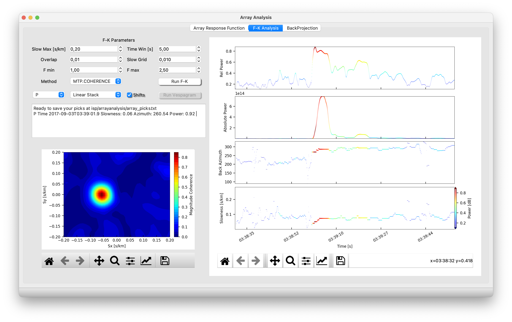

Array Analysis
Array Response Function (ARF)
The Array Response Function (ARF) (Ruigrok et al., 2017) helps to evaluate the resolution of the array in a specific bandwidth.
First you need to create a coordinates files and then load it. To create the coordinate file go to “Files >>> Stations Coordinates” and fill the table with lat (o), lon (o) and depth (km).
Then you can compute the ARF and plot the map with the array stations.

Frequency-Wavenumber Analysis
The Frequency-Wavenumber (FK) is basically a method to compute the beamforming in the frequency domain (Capon, 1969).
To compute the FK you need follow this steps;
- Files: Path where you have the seismograms
- Dataless: path where you have the metadata (.dlsv or .xml)
- Set temporal window of the analysis and check the box Trim
- Plot the seismograms
- Fill the parameters (Slowness Max, Time Window, overlap……)
- Choose methods
- Press Run F-K
Now, you will watch in the upper panels the Rel Power, Absolute Power, Back-Azimuth and Slowness results of your analysis.
Two more actions: Double pick in the upper panels will run the FK in that specific time window (starting in the point). Then, the slowness map and the stack corresponding to the delays of the maximum power in the slowness vector will show up.
The pick with the slowness vector corresponding to the phase you selected are automatically saved in the file “isp/arrayanalysis/dataframe.csv” and you can open the file just pressing “ctrl+o”

Vespagram
The vespagram is a visualization of the FK results for an specific backazimuth or slowness. So, once you have done the FK analysis, you can compute the vespagram (Rost and Thomas, 2002).
But before, you must select the time window. Go with the mouse to the any upper panel. Pick, hold and drag to the right direction to do the selection. Now you can open the vespagram window.
In the vespagram window you can select the parameters (Win length, overlap, and frequency bandwidth of the analysis) and the backazimuth and slowness where you want to compute the vespagram.

Multimedia Material (Array Analysis)
The following video shows a basic analysis of a nueclear explotion (Test from Nort Korea test 2017, Alaska Array ILAR)